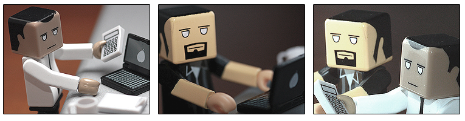

STUDYING JAPANESE AT WORK
“Most inputs are useless and time is wasted in proportion to the amount of time that is available” - Timothy Ferris

No matter who you are, you’re probably busy (and if you aren’t, you should read this chapter anyways for all the time saving, learning, and efficiency tips to really supercharge your rate of Japanese learning). Although this chapter is titled “Studying Japanese at work” you can replace the “work” part with anything else that demands a large amount of your time. The goals of this chapter sound ominous, but take things a step at a time (and refer back to this chapter often) and you’ll be making progress in no time. Here’s what we’ll cover, in a nutshell.
- Help you cut down on actual “work” time: We’ll use the 80-20 rule, reduce distractions, and more to cut out 50-80% of the time you spend “working” so you can use it to focus on something else, like learning Japanese. All of this will be done without losing the quality of your work.
- Teach you how to avoid getting in trouble so you can study more: I really don’t want you to get in trouble for studying Japanese while you’re at work, so we’ll be going over some tips and tricks to avoid problems with the boss so you can study throughout the day.
- Learn how to become an early riser: It’s amazing how much more you can get done if you wake up early. We’ll go over some tips and tricks to help you wake up really early, not feel tired, and get ahead before anyone else even thinks about rolling out of bed.
The contents of this chapter won’t happen overnight. I recommend that you come back to this chapter often, read it for inspiration, and take things a step at a time. The content will always be here, so you don’t need to go too gung-ho and burn yourself out. It’s much more important that you do things right. Although the content here will get you quite far, I’d also like to recommend two really great books where a lot of these concepts have come from. Take a look if you get the chance and have some extra time (and you will, after taking action on the below lesson): Four Hour Workweek & Getting Things Done.
Alright, let’s get started!
CUT DOWN ON “WORK TIME”
AND BE AN EFFICIENCY NINJA
“Options—the ability to choose—is real power.” - Timothy Ferriss
Think about your work day. How much do you really get done most of the time? Be honest with yourself. I imagine some of you are saying “I work 24/7. I can never stop working otherwise everything will fall apart!,” etc., etc… but would things really fall apart? How many really important things do you do every day? How often do you check your e-mail? How much time do you spend in meetings? If you looked back on today, how much did you really accomplish?
Believe it or not, it’s a lot easier than you think to cut down on work time while getting more done in the process. Here’s the thing about “most people:” You probably only get 1-2 hours of real work in during the day (even though you’re expected to work 8-10 hours, because it’s the social norm), and your attention span probably only lets you work 30-60 minutes at a time, which means you’re just keeping yourself busy for the sake of being busy the other 6-8 hours you should be working.
Now, be careful with these tips. They could get you fired, because even if you are able to do 8 hours of work in 2 hours, and at the same time you are getting twice as much done as everyone else, you’ll still be expected to scale that up to 8 hours a day while doing 8 times the work as your co-workers. This just doesn’t work, so you’ll have to keep your new efficiency skills secret from your superiors.
Working from home
When you’re always at the office, it’s always expected that you work 8-5 (or something similar), and whatever you get done during that time is a “good (or at least adequate) job.” When you work at home, it suddenly becomes all about the results, not how much or from where you work. If you don’t have to work from the office, you could work two hours (using efficiency techniques explained below), and then spend the rest of your free time studying Japanese. By freeing up this extra time, you will be able to move more quickly on your goals, have more time to relax (a very important thing to do if you want to make progress!), and reach fluency much, much faster. If you already have the ability to work from home 3, 4, 5 days a week, then that’s great. Skip to the efficiency steps below to cover your tracks and get more done with less effort. If you don’t know if you’re able to work from home, keep reading. There’s a pretty specific way to pull it off.
- Take a sick day or two. Instead of being sick, use the efficiency techniques below to double your work results. Come back to work with solid results and real numbers so that you can show how much more you get done away from the office (you know, without all those distractions).
- Go to your boss and say something like “Even though I was sick, I worked from home, and truth be told, I got a lot more done at home than I thought. There aren’t distractions, and it was just really easy to focus. I did ____, _____, and _____ from home, was able to access everything I needed (you may need to install an application like GoToMyPC to access your work computer), and really felt distraction free. I could focus!”
- Ask to be able to work from home 1 day a week. Make sure to mention it would just be a trial-period, and that it’s reversible (very important). Most reasonable bosses will okay this, as long as they know that they have the power to make it a no-go if it doesn’t work out (which you better not let happen!). Be sure you showed up with solid examples of how at-home work differed from at-work work in terms of what you got done.
- After a few weeks of this, ask to extend your at-home work to 2 or 3 days a week. Be sure you have solid results and data on what you’ve been doing so far (1 day a week from home).
- After another couple of weeks, take the leap and ask for permission to do it 5 days a week. Once again, cite better performance from at home, and even prepare a Power Point if you have to. Most importantly, make sure that you’re showing real results from working at home so that there’s real benefit for the boss and company as well. You want to make sure you can help them make a good decision :)
If you follow these steps, there’s a good chance you’ll be able to switch from 9-5 to something more like 9-11 (or 6-9am, if you follow the “waking up early” tips coming up) all from the comfort of your PJs. Now’s the fun part, though… actually getting things done.
Pick ONLY 1-2 important actions to do each day
I used to have a huge long to-do list consisting of hundreds of things to do. To be honest, it was very helpful, but overwhelming. Sure, it had literally everything that I need to do on it, and it was organized well, but in the end, it was just too much and I didn’t quite know what to do next. Being overwhelmed with tasks you need to do is almost as bad as not knowing what you need to do next. When you have too much to do, you just shut down, become confused, and create “busy work” in order to put things off. In the end, how much do most people get done in a day anyways?
Luckily, that’s not a rhetorical question. If you can get 1-2 important tasks done per day, you’ll be doing more than 90% of the rest of your office. It may sound harsh, but normal people love filling their days with unimportant (or at the most, moderately important) tasks, like “checking your e-mail” or “reorganizing your calendar.” Now, when I say “important tasks,” I mean actionable tasks that move something forward visibly. If you’re going to be sneaky, you have to do things that your co-workers and boss can see. If people (including yourself) can’t see results from it, or what you’ve done, then it probably wasn’t all that important to begin with. It’s all about setting priorities, and tasks that don’t visibly move something forward probably aren’t high on the priority list.
At the beginning of the day, I want you to do this: Get a piece of paper (small is good, keep it in your pocket) and write down 1 or 2 important things that you will do that day AND THEN DO THEM. Reduce distracting tasks, and zoom in on what you’re doing. If you do this right, most “important” tasks won’t take more than an hour to complete (even though your old self would take all day). Do this once or twice a day, and you’re golden (as long as you’re working from home, otherwise you have to pretend like you’re keeping busy the other 6 hours of the day).
Now, it’s really important that you don’t pick more than 1-2 things to do. If you get them done (and you will), then train yourself to relax (this will take some work if you’re a workaholic like me) and do the things you want to do. Plus, you can always add another to-do if you really want to. Remember, it’s all about freedom!
Batching Your Email, Social Networking, and Other Distracting Tasks
Once you start a task, you should continue doing that task, and not let anything interrupt you. A lot of people think they get more done by multi-tasking. This is 100% BS. Studies have disproven this over and over again. Even listening to music will slow people down and break focus (despite what many of you will think). People who focus on one thing, and only one thing, get more done than 20 self-proclaimed “multi-taskers” combined. I hate to break it to you, but if you’re a multi-tasker, it’s time to bat for the other team.
With the Internet, there are so many “fun” distractions. Email, Twitter, Facebook, Farmville, Scrabble, YouTube, and so much more take up little bits of our time over and over and over and over and over again all throughout the day. Once we get distracted by one of these things, our focus has been broken, and it takes valuable energy to re-focus on your original task. Every time you switch from one thing to another (and then back, as the case may be), you’re spending time re-adjusting your focus back to something else. It is estimated that distractions big and small (just the distraction part), wastes approximately 2 hours of every day. That’s two hours you could have to do something else if you cut out those distractions.
Here’s what we’re going to do. Instead of jumping from one thing to another (or even eliminating things), we’re going to batch and schedule. For example, I check my e-mail once a day, from 11:00am – 11:30am. Before I switched to this method, I’d check my e-mail all throughout the day in 10 minute increments, possibly spending two hours on e-mail alone. Now that I batch, I spend 30 minutes a day on email, and get the same amount done. 1/4 the time spent with the same results (perhaps even better results). One thing I found was that the world didn’t end when I didn’t check my e-mail. If I wanted, I could set up a vacation autoresponder actually telling people my e-mail schedule so that way they could contact me via telephone if it was an emergency. The thing is, it’s never an emergency, so checking e-mail once a day is no problem. If you’re addicted to social media sites like Facebook or Twitter as well, batch those too. Make a schedule and stick to it. If you give yourself 15 minutes, miraculously you’ll see all you need to see in that time period. It’s like magic!
Once you “batch” distracting, repetitive tasks, try to slowly spread them farther and farther apart. Right now I do e-mail once a day, but I’m hoping to eventually do it every other day, or even just once a week. Take it slow and experiment. You’ll find that it’s not so bad, and you’re able to focus on what’s really important. Email, Facebook, Twitter, and the like are all very addictive, I know first hand. It might take some effort to cut yourself off, but once you do it for a week or two, you’ll feel relief. It’s like quitting the cigs. You just have to get past the shakes!
Besides Email and social media, what other things can you batch? Even outside of the office there’s a lot you can do to make life more efficient. Here are some things that I try and batch, and you can do the same. The more you batch, the more efficient you will be, and the more time you will have. Remember, once something feels comfortable, try spreading the schedules out even more to see how much you can get away with. It’ll be more than you think!
- Laundry
- Bills
- Cooking
- Exercising
- Cleaning
- Telephone calls
- Calling friends, family
- Shopping
- What about you? $0.25 bounties for more recommendations to this list.
Avoiding Time Wasters
People, I think, are the biggest time wasters. Now, I’m not saying you shouldn’t enjoy the company of others, far from it! Avoid the ones that waste your time, though. That way you can spend more time with the people you care about, or do the things you enjoy most. Offices are very social places (which is nice, because otherwise they would be worse than they already are), which means people like to do small talk. If you’re working on something important, don’t let someone distract you. Even more importantly, start training your colleagues to avoid wasting your time. Here are some tips.
- Whenever someone comes to your workspace to ask you something, cut right to the point. Come up with an excuse that makes your time seem urgent. “I have a call in 5 minutes, what can I do for you?” This way, they can’t do any small talk and it will force them to get right to the point. It will also slowly train them over time to treat your time with more importance.
- Try to get people to email you information. When someone comes into your office, use the tactic above, and instead of having them tell you what’s happening, just ask them to email you the information. Email is more concise, anyways, and a lot easier to deal with.
- Avoid meetings if you can (or at least try to set time limits). If you can get out of a meeting and get the info on it afterwards, do it. Meetings are one of the biggest time wasters in any office, and are usually too drawn out and nothing really important ever gets done.
- Wear a headset and use it to pretend like you’re talking to someone on the phone whenever someone comes in to ask you something.
- Go to work in the conference room if it’s available. If you’re working in the conference room, people will think you’re up to some serious business and cannot be distracted.
Setting Calendar Reminders
This, perhaps, is the single most useful tip in terms of the results you can get from almost no effort at all. Do this right now.
Set up a calendaring system (Google Calendar is my favorite, but Outlook, iCal, or anything with an “alert” feature will work), and add alarms / alerts that go off every two hours during your work day. These alarms are there to ask you one thing: “Am I inventing work for myself?”
If the answer is “yes,” then it’s time to refocus on one of those “important tasks” we talked about earlier. If the answer is “no,” then you can keep doing whatever you’re doing. By “inventing work” you’re just wasting a whole lot of time.
It’s so easy to lapse back into “work for work’s sake,” and having simple reminders will help you stay on track, and even train you stay focused. Seriously, one of the best things I’ve done for myself in a long time, and I suggest you do the same.
Setting Strict Time Limits
Do you remember Parkinson’s Law from Season 1?
“A task will swell in (perceived) importance and complexity in relation to the time allotted for its completion.”
In college, I’d get my papers and research done whether I started 12 hours before they were due, or 12 weeks before they were due. To be honest, it almost didn’t matter when I started, and usually the end product was better if I waited until there was no time left. Why? Because when you wait until the last minute, and when you don’t have time to get something done, you focus on what’s important and only what’s important. When you have more time you’ll do a lot more, much of which isn’t all that necessary, and certainly not important. By setting strict time limits with yourself (and I really do mean strict), you’ll be getting a lot more done in a lot less time, mostly because you have no choice. I know every single one of you knows what this is like, getting a paper done at the last minute. It works, right?
- Give yourself aggressive timelines for getting a project done. Don’t be easy on yourself, otherwise you’re just wasting time. 72 hours for big projects is usually a pretty good timeline.
- Setting strict time limits will help you focus on what’s important and what really needs to get done. Use this energy to plow through projects that should normally take days and get it done in a matter of hours. Sure, you could spend a whole week getting something 99% perfect, but really, why not spend a couple hours and get it 95% perfect instead? They’re both pretty darn good.
- Break your workday up into 60-90 minute increments. Use a stopwatch. Once the timer runs out, you can’t work on whatever you’re working on until tomorrow. The timer will help push you to stay focused, as long as you’re actually serious about postponing work to the next day if you don’t get it done.
- If you do have something that actually does take a lot of time and requires daily work (and this should be pretty rare), stop working on something when you’re feeling like you’re doing really well (and enjoying it). Why stop when things are going swell? Because then you’ll be easily motivated to start working on it the next day. If you stop at a point where you’re not feeling good about the project, you won’t want to continue.
STUDYING AT WORK
WITHOUT GETTING CAUGHT
“Intelligence is the ability to avoid doing work, yet getting the work done” – Linus Torvalds
The easiest way to study Japanese at work without getting caught, of course, is by negotiating for the ability to work from home. As long as you get those 1-2 important actionable tasks done per day, nobody will ask questions and you’ll be able to spend 3/4 of your normal work hours doing what you want (in theory, that would be studying Japanese, but you get the picture). Unfortunately, the world doesn’t always work the way we want it to, and there’s a good chance that your job (or whatever it is you spend a lot of time doing during the day) doesn’t have this kind of flexibility, or your job requires you to be publicly visible at all times. This section, my friend, is for you.
Translating The Things You Work With
When you do something that definitely won’t let you work at home (like working at McDonalds, maybe?), you’ll have to get a little bit creative with your at-work studying. One thing you can do is make a list of all the things in your work-area. Hamburgers, fries, spatulas, etc., bring that home, and then find the translations for all of those words using something like jisho. Then, the next day when you’re at work, try to actually think in Japanese (at least with the vocab). Whenever you look at a spatula think “spatula” in Japanese. Whenever you look at a hamburger think “hamburger” in Japanese. Create your own special “at-work” list on Smart.fm and study it at home and at work (when you have “real-life” flashcards to work with).
Then, when you feel comfortable with the vocabulary on its own, start utilizing the grammar you’ve learned: これ は spatula です, etc. Figure out ways to integrate and practice the grammar with the new vocabulary words whenever possible. By the end of the day, you’ll be a master of all grammar types, local nouns, and you’ll have spent 8 hours studying Japanese (and get paid for it!).
The main thing to be careful of is not weirding out your co-workers, though. It’s one thing to practice, it’s another thing to be “that guy.” That’s not the goal here.
Passive Study Through Osmosis
When all else fails, study through osmosis is the way to go. If you have an iPod, you’re set (and if you don’t, then go grab yourself a Shuffle or something inexpensive… or expensive if you really want). Japanese Podcasts are 100% free on iTunes, and they’re a deep deep resource of the Japanese language being spoken. To be honest, it doesn’t matter much what you listen to, just make sure it’s a podcast and it’s free. Here are the steps to access Japanese podcasts:
- Download iTunes
- Go to the iTunes store.
- Create an account.
- Scroll to the very bottom of the store, and click the flag symbol. Switch it to Japan / 日本
- Click on “Podcasts”
- Download a ton of them.
Studying through osmosis can be very effective… in VERY LARGE DOSES. You’ll have to do this every day for as much time as possible if you want this to have an effect on you. Couple this with the rest of TextFugu and you’ll have a very powerful Japanese learning force to be reckoned with. Some things to keep in mind about this style of study, though:
- It can be very very distracting. Never listen to anything while you’re working on something important, and that includes study. Focus, remember?
- Passive listening will be slow going, but if you actively try to listen (even if you don’t understand what’s going on), it will be a lot more effective and you’ll start recognizing things as your brain adjusts.
- Listening to the same show over and over is good. You’ll start to pick things up after you get some repetition going.
For most people, I don’t necessarily recommend this, but there are definitely certain jobs which lend themselves perfectly to this kind of “study,” when all else fails. Things like delivery, construction, local retail, etc., are perfect.
Privatizing Your Computer
If you do have an office, and you can study at work (Smart.fm, anyone?), then there are ways to avoid getting caught. Now, if you do get caught, that’s not my fault. You’ll have to figure your own way out of that one, so I’d recommend coming up with an excuse, like: “oh, I was just taking my break. I started learning Japanese recently and have been using my breaks to get better, want to see?” is a good one to avoid taking any blame. If you don’t sound guilty, it’s hard to blame you for being guilty.
There are some other things you can do to prevent getting caught however:
- Get a privacy screen for your computer. This way, only people who are at the exact right angle can see it.
- Learn the shortcut keys for closing / minimizing windows, or switching between applications. If you’re quick enough, you’ll be able to hear someone coming and then switch back to “work” before anyone notices.
- Make sure you find out if your office tracks computer / internet use. This varies from place to place, so you’ll have to ask your “tech” person. If this is a problem, consider bringing another laptop to work if you have one, or even an iPod Touch / iPhone / other smart phone will work too.
Remember, don’t get caught, and if you do, have a great excuse ready. In reality, studying Japanese at work isn’t the worst thing you could be doing, if you know what I mean. Wink wink, nudge nudge, saynomore saynomore.
WAKING UP EARLY
“Some people dream of success while others wake up and work hard at it.”

Waking up early has to be one of the worst things in the world, but if you think about it, there are so many benefits to do so, even beyond creating more time for yourself.
- Most people get more done in the morning.
- You have some extra time to clear your head and prepare for the day.
- There are fewer interruptions because nobody’s awake to interrupt you.
- You spend more time awake (on average).
The hard part of this section, though, is actually waking up early. I’ll be honest, I’m not all that good at it, but I have done a lot of research on the matter. The best way to do it, apparently, is the following.
- Decide when you want to wake up, and wake up at this time every morning. I’d recommend something like 5:00am.
- Don’t have a set time to go to sleep. Your body will tell you this. When your brain starts to release hormones telling you it’s sleepy time, don’t fight it and go to bed. In the long run, you’ll sleep a lot less, even if you end up going to bed a bit earlier (my guess is that it’ll probably average out at about 11pm). If you’re not tired, don’t go to sleep, because your body knows how much sleep you need, especially as your body has gotten used to your new schedule.
- Set your alarm, and make sure it’s across the room. Once you’re up, go somewhere else (besides your bedroom). Go to the bathroom, stumble to the kitchen, whatever. Just get away from the bed. It’s too tempting.
- Train yourself to avoid the voices in your head saying “Oh, but it would feel soooo good to sleep some more.” This is the one I have trouble with. Don’t even start.
- After a week or two, you’ll get used to this. The important thing is to follow the signs your body gives, and go to sleep when you need to (and don’t fight it). Avoid games, television, etc., too soon before you go to sleep as well. Reading fiction is great.
- This is a good one for coffee-addicts: “Smell the coffee and wake up!” There are coffee makers that you can set to make coffee for you automatically in the morning when it’s time to wake up. The smell of coffee is a good way to get you out of bed. (Submitted by TextFugu Member Sumi)
- If you have a pet, train it to be fed or need to go out at a certain time (preferably sometime early). Either they will bug you so much that you get up, or you’ll have to get up (before they pee on the carpet), which will get you up, moving, and ready to start the day (Submitted by TextFugu Member kaxxina).
- The problem with alarm clocks is that it is so easy to just fall back asleep. Doing something will help you wake up, and I personally can’t go to sleep with my clothes on. Leaving your alarm clock going while getting dressed is a huge plus. If it’s one of those clocks that just keeps ringing and ringing, it will annoy the hell out of you. I think it’s important that your alarm not be pleasant. I use an Ultraman alarm clock from back when I was a little tadpole. The bed is even more attractive in the morning during the winter with all those warm covers. Have something warm ready to put on too! (Submitted by TextFugu Member FeelYourUFO)
- Try taking a shower and brushing you teeth immediately after getting out of bed. It removes almost all desires to sleep (Submitted by Justin)
- If you happen to have someone sleeping with you regularly, get that person to “kick you out of bed”. When I have my alarm set for 5 am and I snooze for an extra hour, my alarm goes off about 3 times in that hour. When my partner does not need to be awake that early, she’ll make sure I get up the first time my alarm goes off so she can keep sleeping. Also, it’s basically the same thing as when you were suggesting to have people keep you accountable for your learning (Telling people about your intentions – how to start to learn Japanese – Season 1) but now it’s about having your partner keeping you accountable for getting up early. (Submitted by JD)
- Set-up two alarm clocks. One is the standard alarm clock you have and the other one could be your cellphone. Set the alarm time around 5-10 minutes apart. When your first alarm clock goes off and you’re up, good. The second alarm would just be a little reminder or an extra boost. On the other hand, should you turn off the first one and you end up going back to bed, the second alarm serves as a back-up / an insurance policy of sorts. That’s how I get by everyday (Submitted by arashikat)
- This is what I currently use; I put something I REALLY like to do in the morning (computer, gaming, drawing, TV) and make it the first thing I do. This makes waking up so much easier (and enjoyable!), thus changing your outlook of waking up from chore to highlight of the day. (Submitted by Jdkce)
- To accompany the previous method (#12), which wakes up your mind’s eagerness, this trick helps your BODY to get out of bed. By drinking lots of water the minute you get up (I keep a 1.5 liter bottle at my bedside and I drink about .5 to 1 litre in the morning). Your stomach will get accustomed to being filled at that time, thus hunger will wake you up. It may sound a little gruesome, but this type of hunger is a feeling of emptiness in your stomach, not a dinnertime gastric hunger. This is based on what competitive eaters do before the day of a competition, drink LOTS of water. This is of course, not recommended for everyone. (Submitted by Jdkce)
There you have it… that sounds kind of … hard, right? Well, hopefully waking up early is the most difficult thing in this textbook. Waking up early is optional, of course, but still highly recommended if you can do it. Waking up early will give you so much more time, and if you do it right, you’ll be done with your “work” day by 11am, leaving the rest of the day to do whatever you want.
Before You Move On:
- Figure out the time wasters and distractions in your life and write them down. What can you do about each one to snuff it at its source? What things aren’t important? What can you cut completely?
- What regular tasks can you batch to save time? Figure out what they are and set an aggressive schedule. If batching them into daily tasks works with no problem, try every other day. Keep pushing the envelope, and adjust when necessary.
- Would it be possible to do your job from home? If so, take the first actionable step towards making that happen. Talk to your boss about doing it once a week, preferably a Monday or a Friday, so you can have a 3 day weekend.
- Set up calendar reminders to ask yourself if you’re “inventing work” or if you’re actually doing something important (there’s only a couple things to choose from!)
- Start a daily to-do list (a scratch paper will work perfectly), and only focus on the now. Write 1-2 things to do today, and do them. By now you should have removed all distractions.
- Get used to setting aggressive timelines and time limits for everything you do. Be strict so you actually feel the need to get your projects done in the short amount of time allotted.
- Figure out how you can integrate Japanese study in with your work, whether that’s listening to Podcasts, translating the things you commonly work with, or setting up more privacy screens on your work area computer.
- Give waking up early a shot. It’s not easy, I can tell you from experience, but you get so much done early in the morning, and strangely enough you feel more energized once you get used to it (and once you get out of bed).